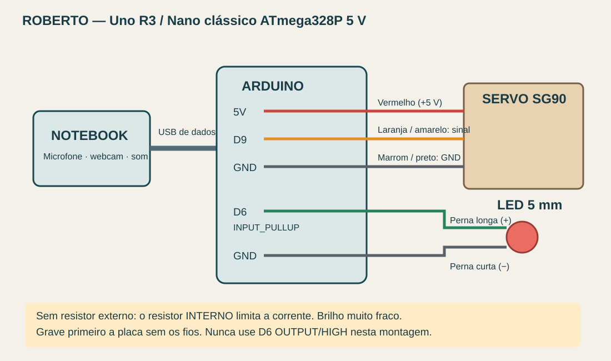

← Voltar ao início do pacote
Roberto — do Arduino vazio ao robô funcionando
Este guia é para Arduino Uno R3 ou Nano clássico, com ATmega328P e lógica de 5 V, um servo SG90 e um LED comum de duas pernas. Não aplique o esquema automaticamente em Uno R4, Nano ESP32, placas de 3,3 V ou outras variantes.
1. O que cada programa faz
| Arquivo ou programa |
Onde funciona |
Quando usar |
INICIAR_ROBERTO.bat |
Notebook Windows |
Toda vez que quiser conversar com o robô |
| Painel no navegador |
Notebook Windows |
Ver câmera, simulação, comandos e conectar o Arduino |
GRAVAR_ARDUINO.bat |
Notebook Windows |
Gravar o programa na placa, normalmente só uma vez |
Roberto.ino |
Abre na Arduino IDE; é compilado para a placa |
Alterar ou gravar o firmware pelo método tradicional |
Arquivos .py |
Notebook Windows |
Código da IA, voz, câmera, painel e comunicação |
Arquivos .f3d |
Autodesk Fusion |
Inspecionar ou editar as peças mecânicas |
Arquivos .dxf |
Programa da máquina laser |
Cortar as peças de MDF |
Você não grava Python nem a inteligência artificial no Arduino. O notebook ouve, interpreta e fala. O Arduino recebe comandos pelo cabo USB e controla o LED e o servo. Webcam, microfone e alto-falantes continuam no notebook; não são ligados a pinos do Arduino.
2. Materiais
- Uno R3 ou Nano clássico ATmega328P de 5 V.
- Cabo USB de dados, compatível com a placa. Uno R3 costuma usar USB-B; Nano varia conforme o fabricante.
- Um SG90 posicional de aproximadamente 180°, com horn e parafuso originais. Não usar versão de rotação contínua para este braço.
- Um LED comum de 5 mm, duas pernas.
- Dois jumpers fêmea–macho para prolongar o LED até o Arduino, ou fios soldados e isolados.
- Três jumpers macho–macho para ligar o conector fêmea do servo aos soquetes do Uno. Ajuste o tipo de jumper aos conectores reais da sua placa.
- Isolamento para cada emenda: tubo termo-retrátil ou fita isolante apropriada. Nenhum terminal positivo pode tocar o negativo.
Não é necessária pilha nesta opção. Toda a alimentação vem do USB. Isso é uma configuração de teste para um servo com braço leve; depende do cabo, da porta USB e do consumo real do servo. Se reiniciar, tremer ou desconectar, não considere a alimentação validada. Não segure o braço para impedir o movimento e não coloque objetos na mão.
3. LED sem resistor externo: o que muda
O firmware deste pacote foi adaptado para usar o resistor interno do ATmega328P. Assim, o LED pode ser ligado diretamente entre D6 e GND, sem comprar ou montar um resistor separado.
O brilho fica muito fraco. Não é equivalente a um LED alimentado normalmente: pode ser pouco visível numa sala iluminada. A documentação da Arduino informa que os pull-ups internos de placas AVR têm aproximadamente 20–50 kΩ e fornecem corrente suficiente apenas para acender um LED fracamente. Para um LED vermelho com cerca de 2 V, isso corresponde a aproximadamente 0,06–0,15 mA. É uma estimativa, não uma medição da sua placa.
O código para acender usa pinMode(6, INPUT_PULLUP). Para apagar usa pinMode(6, INPUT). Nunca mude esse LED para OUTPUT e HIGH nesta montagem sem resistor externo. Não ligue o LED entre o pino 5V e o GND: nessa ligação o resistor interno não participa.
Se o brilho for insuficiente para apresentar na faculdade, será necessário um resistor externo de 330 Ω ou um módulo que já contenha resistor, com firmware apropriado. O pacote não promete brilho normal sem limitação de corrente.
Referência oficial: Arduino — Digital Pins, seção INPUT_PULLUP. O firmware ainda não foi ensaiado numa placa física, pois o Arduino não está disponível nesta etapa.
4. Grave a placa ANTES de conectar o LED e o servo
Isso evita que algum programa antigo da placa configure D6 como saída forte e danifique o LED sem resistor externo.
- Deixe todos os fios do LED e do servo desconectados. Use apenas a placa e o cabo USB.
- Conecte o Arduino ao notebook.
- No painel do Roberto, deixe MODO SIMULAÇÃO. Se estava conectado à serial, clique em “Voltar à simulação”. Feche o Monitor Serial da Arduino IDE se estiver aberto.
- Abra
03_ARDUINO/GRAVAR_ARDUINO.bat na pasta da faculdade.
- Em “Sua placa”, escolha Arduino Uno R3 ou Arduino Nano clássico, conforme a placa que você tem.
- Clique em “Atualizar portas”. Escolha a porta COM que apareceu ao conectar a placa. Se tiver dúvida, retire o cabo, atualize e veja qual desapareceu; reconecte e escolha a que voltou.
- Clique em “Gravar Roberto no Arduino” e confirme a substituição do programa da placa.
- Aguarde a mensagem de gravação concluída. Não desconecte durante a gravação.
- Em um Nano que não grava, confira o modelo e tente a opção bootloader antigo. Se nenhuma porta aparecer, confira o cabo de dados e o driver do conversor USB da placa, usando o fabricante como referência. Não instale um driver aleatório.
- Depois da confirmação de sucesso, retire o cabo USB antes de montar os fios.
O gravador usa ferramentas oficiais da Arduino e firmware pré-compilado, incluídos no pacote. Ele não apaga o notebook nem precisa enviar seu projeto à internet. A gravação física ainda deve ser testada com a placa real.
Alternativa: pela Arduino IDE
- Instale a Arduino IDE oficial.
- Abra
03_ARDUINO/Firmware/Roberto/Roberto.ino. Mantenha o arquivo dentro da pasta chamada Roberto.
- No Gerenciador de Placas, instale Arduino AVR Boards. No Gerenciador de Bibliotecas, instale Servo, da Arduino.
- Selecione Arduino Uno, ou Arduino Nano clássico, no seletor de placa. Não escolha Uno WiFi Rev2 ou outra família.
- Selecione a porta COM correspondente.
- Clique no botão de Verificar (símbolo de check). Isso compila, sem gravar.
- Clique na seta Carregar/Upload. Aguarde a conclusão.
- Feche o Monitor Serial antes de conectar a aplicação Roberto à mesma porta.
Guia oficial: Carregar um sketch com Arduino IDE 2.

5. Ligue os fios com o USB DESCONECTADO
Use as inscrições impressas na placa, não uma posição estimada pela fotografia. Há mais de um GND; eles são interligados e você pode usar um para o servo e outro para o LED.
| Componente |
Identificação |
Arduino |
| Servo SG90 |
Vermelho: positivo |
5V, no grupo POWER |
| Servo SG90 |
Marrom ou preto: negativo |
GND |
| Servo SG90 |
Laranja, amarelo ou branco: sinal |
D9, no grupo DIGITAL |
| LED |
Perna longa: positivo/anodo |
D6, via um fio, sem resistor externo nesta versão INPUT_PULLUP |
| LED |
Perna curta: negativo/catodo |
GND, via outro fio |
| Notebook |
Cabo USB de dados |
Conector USB da placa |
As cores do SG90 são usuais, mas confira seu modelo. Nunca ligue o vermelho do servo ao D9, nem ao 3.3V ou VIN. D9 só envia o sinal de comando. Não junte 5V com GND.
Se as pernas do LED foram cortadas, o lado achatado do encapsulamento geralmente marca o catodo/negativo. Se ainda houver dúvida, confira com o vendedor ou um multímetro na função de diodo antes de ligar. Não inverta por tentativa repetida com alimentação ligada.
NOTEBOOK ── cabo USB de dados ── ARDUINO UNO R3 / NANO CLÁSSICO 5 V
│
├── 5V ───────── SG90 vermelho
├── GND ──────── SG90 marrom/preto
├── D9 ───────── SG90 laranja/amarelo (sinal)
│
├── D6 ───────── LED perna longa (+)
└── GND ──────── LED perna curta (−)
LED: D6 usa INPUT_PULLUP, com resistor INTERNO. Brilho muito fraco.
Não usar D6 OUTPUT/HIGH e não ligar o LED diretamente ao 5V.
Para o LED no peito, prolongue as duas pernas com cerca de 20 cm de fio. Um jumper fêmea pode encaixar em cada perna se ficar firme; para a montagem definitiva, prefira solda e isolamento individual. Prenda os fios internamente, deixando uma pequena folga, para não puxar o LED.
6. Primeiro teste elétrico: sem prender o braço no servo
- Mantenha o servo sem o braço de MDF acoplado, apoiado numa superfície estável.
- Confira os cinco fios na tabela, inclusive polaridade e pinos 5V/D6/D9.
- Conecte o USB ao notebook. O servo pode ir à posição inicial de 90° ao energizar; por isso o braço deve estar solto nessa etapa.
- Abra
INICIAR_ROBERTO.bat na raiz da pasta da faculdade.
- Aguarde o painel abrir e os recursos locais carregarem.
- Abra a seção “Arduino por USB” no painel, clique em “Atualizar portas”, selecione a COM correta e clique em “Conectar Arduino”.
- O indicador muda para ARDUINO CONECTADO. Isso confirma a abertura da porta; o sucesso de cada comando só é informado depois do ACK do firmware.
- Teste pelo botão “Acender luz”. O LED deverá acender fracamente. Em seguida teste “Apagar luz”.
- Teste “Levantar braço” e “Abaixar braço”. O eixo do servo deve mudar entre as posições conservadoras do firmware, sem peso acoplado.
- Só depois teste por voz: “Roberto, levante o braço”. Aguarde terminar a resposta antes de dar o próximo comando.
Se aparecer que o Arduino não confirmou, não suponha que nada se moveu: o comando pode ter sido aplicado e a resposta perdida. Confira placa, firmware, COM e conexão antes de repetir. Não há sensor de posição no braço.
7. Acoplar o braço e calibrar
- Desconecte o USB.
- Confira o suporte do SG90 e a posição do horn. Os furos do projeto mecânico são preliminares e precisam coincidir com seu servo e horn reais.
- Para posicionar o servo, energize-o ainda sem braço e use “Abaixar braço”; depois desligue novamente.
- Prenda o horn original ao braço de MDF com os dois pequenos parafusos compatíveis, sem rachar a placa.
- Encaixe o horn no eixo estriado na posição desejada e use o parafuso central original do servo. Não force o eixo girando-o à mão.
- Reconecte o USB e teste um movimento pequeno. Não deixe o braço bater no corpo.
- O firmware usa
ANGULO_BAIXO=90 e ANGULO_ALTO=45. Esses valores não são universais: dependem da montagem. Se precisar alterá-los, edite o .ino na Arduino IDE e grave novamente. O gravador simplificado usa os .hex já compilados e não recompila suas edições.
- Se quiser levar a versão alterada à faculdade, exporte novamente o firmware compilado ou use a Arduino IDE para gravar a sua edição.
8. Uso normal na apresentação
Depois de gravar e validar o hardware, não é necessário abrir a Arduino IDE a cada uso. Conecte o USB, inicie o Roberto pelo BAT e conecte a COM pelo painel. A IA continua rodando no notebook; a placa recebe apenas os comandos.
Para voltar à demonstração sem placa, clique em Voltar à simulação. A ação ficará identificada como simulada. Ao iniciar novamente o programa, a configuração distribuída começa em simulação.
9. Se não funcionar
| Sintoma |
O que conferir |
| Nenhuma porta COM |
Cabo precisa transmitir dados; confira placa e driver |
| Falha ao gravar |
Placa certa, COM certa, Monitor Serial fechado e painel sem conexão à COM |
| Nano não grava |
Verifique a opção de bootloader antigo |
| LED apagado |
Polaridade, D6/GND, firmware correto; o brilho com pull-up é muito fraco |
| LED fraco |
É esperado sem resistor externo nesta configuração; para brilho normal, mude o circuito de forma apropriada |
| Servo não mexe |
Vermelho 5V, negativo GND, sinal D9; firmware e ACK |
| Arduino reinicia ou USB cai |
Cabo/porta/alimentação não sustentaram o servo; tire carga e não force o motor |
| Porta ocupada |
Feche Monitor Serial ou outro programa conectado à COM |
| Nome não reconhecido |
Fale perto do microfone padrão e espere o Roberto terminar a resposta |
| Câmera sem imagem |
Feche aplicativos que usam a webcam e confira o índice no painel |
Pendente físico: upload real, brilho do LED com pull-up, corrente do servo pelo USB, curso e encaixe do horn. A compilação e testes em software não substituem essas verificações.